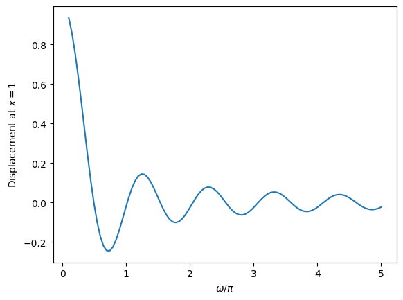
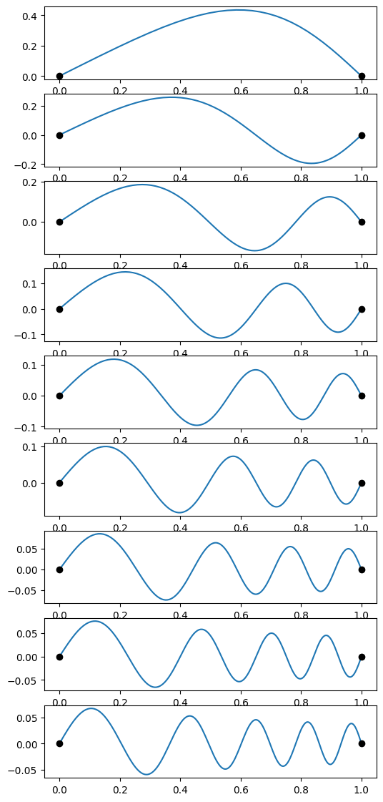

Boundary value problems#
Shooting method#
import numpy as np
import matplotlib.pyplot as plt
import scipy.integrate
import scipy.optimize
import scipy.special
import time
# First do the constant density string to check with the known frequencies
# and eigenfunctions
def derivs(x, y, omega):
f, g = y
dfdx = g
density = 1
dgdx = - omega**2 * density * f
return dfdx, dgdx
def do_integration(omega):
result = scipy.integrate.solve_ivp(derivs, (1e-5,1), (0,1), dense_output=True, args=(omega,), atol=1e-8, rtol=1e-8)
return result.y[0,-1]
fig = plt.figure(figsize = (6,10))
# We'll take advantage of the known frequencies for this case to define the search windows
oms = np.pi * np.array((1,2,3,4,5,6))
num = len(oms)
for i, om in enumerate(oms):
# search within 10% of the analytic frequency
omega = scipy.optimize.brentq(do_integration, 0.9*om, 1.1*om)
result = scipy.integrate.solve_ivp(derivs, (1e-5,1), (0,1), dense_output=True, args=(omega,), atol=1e-8, rtol=1e-8)
x = result.t
f = result.y[0]
# find the number of zero crossings (not including the endpoints)
n = ((f[1:-1] * f[:-2]) < 0).sum()
print("Found omega = %lg pi, n = %d" % (omega/np.pi,n))
plt.subplot(num,1,1+i)
plt.plot(x, f)
plt.plot((0,1),(0,0), 'ko')
plt.show()
Found omega = 1.00001 pi, n = 0
Found omega = 2.00002 pi, n = 1
Found omega = 3.00003 pi, n = 2
Found omega = 4.00004 pi, n = 3
Found omega = 5.00005 pi, n = 4
Found omega = 6.00006 pi, n = 5
# Now do an x-dependent density
def rho(x):
rho = 1.0 + 10*x**2
#rho = np.ones_like(x)
return rho
def derivs(x, y, omega):
f, g = y
dfdx = g
dgdx = - omega**2 * rho(x) * f
return dfdx, dgdx
def do_integration(omega):
result = scipy.integrate.solve_ivp(derivs, (1e-5,1), (0,1), dense_output=True, args=(omega,), atol=1e-8, rtol=1e-8)
return result.y[0,-1]
# Evaluate the displacement at x=1 on a grid of omega
oms = np.pi * np.linspace(0.1,5,100)
result = np.array([do_integration(om) for om in oms])
plt.plot(oms/np.pi, result)
plt.xlabel(r'$\omega/\pi$')
plt.ylabel(r'Displacement at $x=1$')
plt.show()
# identify the zero-crossings as initial guesses for mode frequencies
inds = np.where(np.diff(np.sign(result)))[0]
print('Frequency guesses=', oms[inds]/np.pi)
plt.clf()
num = len(inds)
fig = plt.figure(figsize = (6,14))
for i, ind in enumerate(inds):
omega = scipy.optimize.brentq(do_integration, oms[ind], oms[ind+1])
result = scipy.integrate.solve_ivp(derivs, (1e-5,1), (0,1), dense_output=True, args=(omega,), atol=1e-8, rtol=1e-8)
x = result.t
f = result.y[0]
# find the number of zero crossings (not including the endpoints)
n = ((f[1:-1] * f[:-2]) < 0).sum()
print("Found omega = %lg pi, n = %d" % (omega/np.pi,n))
plt.subplot(num,1,1+i)
plt.plot(x, f)
plt.plot((0,1),(0,0), 'ko')
plt.show()
# Store the last eigenfunction we found to compare later with the relaxation result
x_s = x
f_s = f
om_s = omega


Frequency guesses= [0.44646465 0.99090909 1.48585859 2.03030303 2.52525253 3.06969697
3.56464646 4.05959596 4.6040404 ]
Found omega = 0.493438 pi, n = 0
Found omega = 1.01755 pi, n = 1
Found omega = 1.53483 pi, n = 2
Found omega = 2.0489 pi, n = 3
Found omega = 2.56151 pi, n = 4
Found omega = 3.0735 pi, n = 5
Found omega = 3.58524 pi, n = 6
Found omega = 4.0969 pi, n = 7
Found omega = 4.60855 pi, n = 8
<Figure size 640x480 with 0 Axes>
Relaxation method#
# Visualize matrices as a color map
def plot_matrices(A,titles=[]):
n = len(A)
if titles==[]:
titles = [""]*n
if n>4:
nx = 4
else:
nx = n
for j in range(int(np.floor(n/4))+1):
plt.clf()
plt.figure(figsize=(nx*4,4))
jmax = 4*(j+1)
if jmax > n:
jmax = n
for i,AA in enumerate(A[4*j:jmax]):
plt.subplot(1, nx, i+1)
plt.imshow(AA)
plt.colorbar()
plt.title(titles[4*j + i])
plt.show()
def calculate_G(f, x, omega):
G = np.zeros(ngrid)
dx = x[1]-x[0] # assume constant spacing
G[1:-1] = f[2:] - (2 - dx**2 * omega**2 * rho(x[1:-1]))*f[1:-1] + f[:-2]
G[0] = f[0]
G[-1] = f[-1]
return G
def calculate_J(f, x, omega, analytic = True):
if analytic:
return calculate_J_analytic(f, x, omega)
else:
return calculate_J_finite(f, x, omega)
def calculate_J_finite(f, x, omega):
# Jacobian from finite differences
# We don't use the fact that the matrix is tridiagonal, so we
# evaluate a lot of zeros here, but you can use this for more
# general cases
eps = 1e-8
J = np.zeros((ngrid, ngrid))
G1 = calculate_G(f, x, omega)
for j in range(ngrid):
f1 = np.copy(f)
df = max(f[i]*eps,eps)
f1[j] = f[j] + df
G2 = calculate_G(f1, x, omega)
J[:,j] = (G2-G1)/df
return J
def calculate_J_analytic(f, x, omega):
dx = x[1]-x[0] # assume constant spacing
# We have a tridiagonal matrix, so construct it one diagonal at a time
J = (np.diag( - (2 - dx**2 * omega**2 * rho(x)), k=0) +
np.diag(np.ones(ngrid-1),k=1) +
np.diag(np.ones(ngrid-1),k=-1))
# boundary conditions
J[0,0] = 1
J[0,1] = 0
J[-1,-1] = 1
J[-1,-2] = 0
return J
# Use the frequency from the shooting method:
omega = om_s
ngrid = 200
x = np.linspace(0,1,ngrid)
# Initial guess
f = np.ones_like(x)
# as a check, compare the analytic and finite difference Jacobians
J1 = calculate_J(f, x, omega, analytic = True)
J2 = calculate_J(f, x, omega, analytic = False)
plot_matrices([J1,J2, J1-J2],
titles=["Analytic Jacobian","Finite difference","Error"])
plt.plot(x, f, label = 'Initial guess')
niter = 2
for m in range(niter):
t0 = time.time()
G = calculate_G(f, x, omega)
J = calculate_J(f, x, omega, analytic = True)
U,Sdiag,VT = np.linalg.svd(J, full_matrices=False)
S = np.diag(1/Sdiag)
Jinv = VT.T@S@U.T
#Jinv = np.linalg.inv(J)
df = -Jinv@G
f = f + df
# normalize f(x) and change the sign if needed so that df/dx>0 at x=0
# this makes it easier to compare successive iterations
f = f / max(abs(f))
if (f[1]-f[0]) < 0.0:
f = -f
print('Solve took %lg seconds' % (time.time()-t0,))
plt.plot(x, f, label='Iteration %d' % (m+1,))
plt.legend()
plt.show()
plt.clf()
plt.plot(x,f)
# compare with the analytic solution for constant density:
#plt.plot(x, np.sin(5 * np.pi * x), ":")
# compare with the shooting result:
plt.plot(x_s, f_s * max(f)/max(f_s), "--")
plt.plot((0,1),(0,0),"k:")
plt.show()
<Figure size 640x480 with 0 Axes>

Solve took 0.0272131 seconds
Solve took 0.0136158 seconds
When constructing the analytic Jacobian above, we took advantage of the fact it was tridiagonal to only evaluate the non-zero entries:
J = (np.diag( - (2 - dx**2 * omega**2 * rho(x)), k=0) +
np.diag(np.ones(ngrid-1),k=1) +
np.diag(np.ones(ngrid-1),k=-1))
We can also tell scipy that we are dealing with a tridiagonal matrix when solving the equations by using scipy.linalg.solve_banded. Here’s a new version that does this:
# Calculate the Jacobian in banded form
def calculate_J_banded(f, x, omega):
dx = x[1]-x[0] # assume constant spacing
a = np.ones_like(x)
a[0] = 0
a[1] = 0
b = - (2 - dx**2 * omega**2 * rho(x))
b[0] = 1
b[-1] = 1
c = np.ones_like(x)
c[-2] = 0
c[-1] = 0
return np.row_stack((a,b,c))
# Use the frequency from the shooting method:
omega = om_s
ngrid = 200
x = np.linspace(0,1,ngrid)
# Initial guess
f = np.ones_like(x)
plt.plot(x, f)
niter = 2
for m in range(niter):
t0 = time.time()
G = calculate_G(f, x, omega)
J = calculate_J_banded(f, x, omega)
df = -scipy.linalg.solve_banded((1,1), J, G)
f = f + df
f = f / max(abs(f))
if (f[1]-f[0]) < 0.0:
f = -f
print('Solve took %lg seconds' % (time.time()-t0,))
plt.plot(x, f, label='Iteration %d' % (m+1,))
plt.legend()
plt.show()
plt.clf()
plt.plot(x,f)
# compare with the analytic solution for constant density:
#plt.plot(x, np.sin(5 * np.pi * x), ":")
# compare with the shooting result:
plt.plot(x_s, f_s * max(abs(f))/max(abs(f_s)), "--")
plt.plot((0,1),(0,0),"k:")
plt.show()
Solve took 0.000249863 seconds
Solve took 0.000144243 seconds
Not only do we need much less storage for the Jacobian, this is also much faster than before. For example, for 200 grid points, I find the runtime goes from \(\approx 0.02\) seconds to \(\approx 2\times 10^{-4}\) seconds per solve. For \(N=2000\), the difference is about \(5\) seconds to \(\approx 5\times 10^{-4}\) seconds.